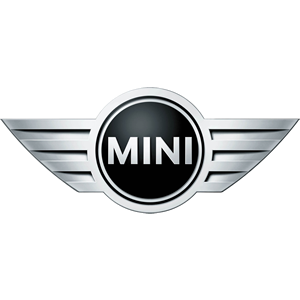

<ion-header mode="ios">
  <div class="header--page">
    <a routerLink="/tabs/tabs/" routerDirection="back">
      <ion-icon name="ios-arrow-back"></ion-icon>
    </a>
  </div>
</ion-header>

<ion-content>
  <div class="status--container">

    <div class="status--header">
      <div>
        
      </div>
    </div>

    <div class="status--message">
      <p>Todo en orden</p>
    </div>

    <div class="status--images">
      
    </div>

    <div class="status--options">
      <a>Sistema eléctrico</a>
      <a>Combustible y aire</a>
      <a>Inyectores</a>
      <a>Sistema de encendido</a>
      <a>Control de emisiones</a>
      <a>Control de velocidad</a>
      <a>ECU entradas y salidas</a>
      <a>Transmisión</a>
    </div>

  </div>
</ion-content>
